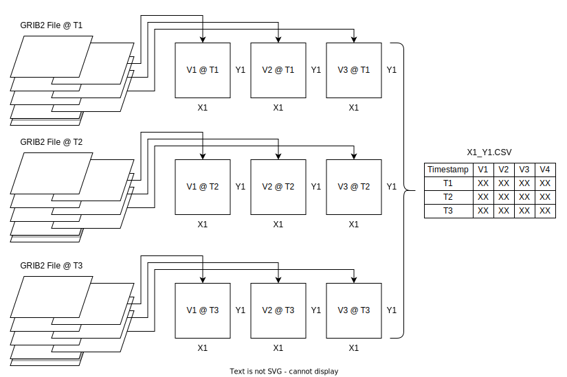
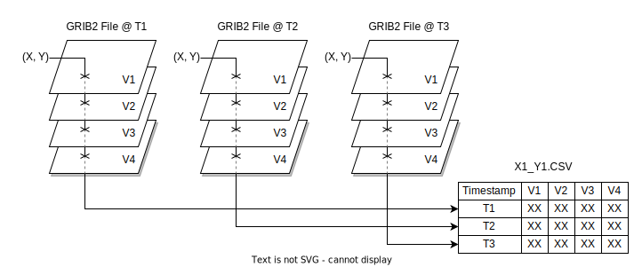

GRIB2 Timeseries Project
Summary
Spearheaded the development of several optimized custom tools to fetch, parse, and process
3 years worth of hourly GRIB2 data from API calls to be used for machine learning research.
Read more:
Embry-Riddle Researchers Use Machine Learning to Tackle Monsoon Season
Background
At the end of last year, I joined a Meteorology Research Team at Embry Riddle, where I was tasked with fetching, parsing, and processing 3 years worth of GRIB2 data. This processed data would then be fed into a machine learning model to predict the onset of thunderstorms. Arizona has a yearly monsoon season, and thunderstorms have the highest rainfall rates of the year, so this research would help to mitigate the damages from flooding, hail, etc.
Details
This research project was broken down into two major tasks:
- Downloading all the data from API calls
- Converting all the data into a time-series CSV for each point
The API calls were rather simple to tackle, I created a program to make a call for each hour from a start time, and then iterate a datetime variable until an end time was reached. The API documentation was tricky to understand, especially the regex passed to it, but with some tinkering I was able to download the data in roughly 20 hours.
The time series conversion on the other hand was more challenging. The data was in GRIB2 format, and the task was to create a time series CSV for each point in the grid with columns for each variable, and a row for each timestamp. Mind you, there was over 100,000 points in the grid, with over 100 variable "layers", and a file every hour for 3 years. Safe to say optimization was the name of the game here.
Before I get into the optimizations I made, I'll explain the data processing pipeline. You can think of GRIB2 files as a stack of papers, with each paper being a variable layer. The whole stack covers the same geographic area, but the papers in the stack contain different variables. On top of this, there can be multiple levels for those variables, such as temperature at 750/800/1000K.
The general conversion goal was to take whole CSV files, iterate through the points in the grids, extract the variables at those points, and create a time series CSV for each point. I've included a diagram below of the conceptual pipeline for how a single point is processed.
Challenges
Using the previous approach, I created a prototype to test the processing speed and found it was abysmally slow. Using a python profiler, I was able to diagnose the bottlenecks as excessive read/write operations, inefficient if/else blocks, and unnecessary function calls.
I then set out to improve my workflow. The early prototype consisted of opening each GRIB2 file, iterating through each sub-grid, iterating through all the points in that sub-grid, and only then pushing the data to the CSV at each point to that variable/timestamp index. This was extremely time-consuming, taking hours to process a single file.
First order of business was to re-arrange my workflow to minimize write operations. After much whiteboard brainstorming I came up with a new approach I like to call "skewering". The idea is to iterate through every sub-grid for a time-stamp, and then to append an entire row to the CSV at once.
This method proved much faster, allowing me to append entire rows to the CSV files at once, reducing write operations heavily since there were over 100 variables to write for each point. The biggest optimizations in this function came from using numpy masking and ravel functions. The function for sub-grid processing is shown below.
# Function to process a sub grid in the GRB file
def process_sub_grid(current_sub_grid):
current_values = current_sub_grid.values.ravel() # Get the values from all the grid cells
current_values = np.where(np.ma.getmask(current_values), np.nan, current_values)
current_column = f"{current_sub_grid.name}: {current_sub_grid.level} {current_sub_grid.units}" # Create column name
return current_column, current_values
Some other minor optimizations I made were to cache the latitude/longitude ranges and all the columns in each GRIB2 file once to reduce repeated function calls. I also made the timestamp create only once per file to save time as well.
# Cache latitudes and longitudes
if latlons_cache is None:
latlons_cache = all_grids[0].latlons()
latitudes, longitudes = latlons_cache
# Cache column names
if columns_cache is None:
columns_cache = {sub_grid: f"{sub_grid.name}: {sub_grid.level} {sub_grid.units}" for sub_grid in all_grids}
# Create timestamp for this file (avoids repetitions)
timestamp = f"{all_grids[0].month}/{all_grids[0].day}/{all_grids[0].year} {all_grids[0].hour}:00"
Another optimization that proved very useful was to use zipping to create the data. This allowed me to flatten everything into 1D arrays, and then tranpose everything into a list of dictionaries.
# Process each sub grid in the grb file (each paper in the stack)
for sub_grid in all_grids:
column_name, values = process_sub_grid(sub_grid)
for lat, lon, val in zip(latitudes.ravel(), longitudes.ravel(), values):
outfile = f"{lat:.3f}_{lon:.3f}.csv" # Rounds to three decimals now
local_data[outfile]['timestamp'].append(timestamp)
local_data[outfile][columns_cache[sub_grid]].append(val)
# Convert the data to a list of dictionaries
for outfile, columns_dict in local_data.items():
local_data[outfile] = [dict(row) for row in
zip(*[[(col, val) for val in val_list] for col, val_list in columns_dict.items()])]
The last major optimization I implemented had to do with our original issue, bottlenecking with excessive write operations. To solve this, I first attempted to use multithreading, but upon profiling saw that I was spending much more time locking threads than using them. Instead, by implementing a data buffer, I was able to store the data for several processed GRIB2 files at once, and then write them all out to their respective CSVs in batches. For my case I chose a batch size of 10. My data buffer code is shown below.
# Function to clear buffer and write to disk
def write_buffer_to_disk(data_buffer, existing_point_files):
for filename, rows in data_buffer.items():
path = os.path.join(OUTPUT_DIR, filename) # Create path to file
df = pd.DataFrame(rows) # Create a DataFrame
# If file exist, append, otherwise create
if filename in existing_point_files:
df.to_csv(path, mode='a', header=False, index=False)
else:
df.to_csv(path, mode='w', index=False)
existing_point_files.add(filename) # Add the file to the set of existing point files if created
The final issue I had to deal with was outages. Sometimes the data would stop coming in for an hour, or there would be missing variables in the GRIB2 files at certain times. To deal with this, I created a quick function to post process the CSVs and fill in any missing data with "NaN" values. This function is shown below.
# Function to post-process each file and fill any missing spaces
def post_process_file(filepath):
df = pd.read_csv(filepath) # Read the file into a DataFrame
df.set_index('timestamp', inplace=True) # Set the timestamp as the index for the DataFrame
df = df.resample('H').asfreq() # Resample to hourly intervals and insert missing rows
df.replace("", np.nan, inplace=True) # Replace all empty cells with NaN
df.to_csv(filepath) # Write the processed DataFrame back to the CSV file
Overall, this work was interesting. I got to work with a lot of new optimization techniques, learned better diagnosing tools, and I'm looking to help on the machine learning aspect utilizing this data for the research side in the near future.
Outcomes
Besides from the obvious, that my work will enable the research team as a whole to continue their work, the code is extremely fast. For over 26,000 GRIB2 files, over 100 variables per file, and over 100,000 points per file, the code to completely process each file runs in roughly 30 seconds. From this, I was able to process 3 years of data in 17 hours. I've included a terminal output screenshot below.